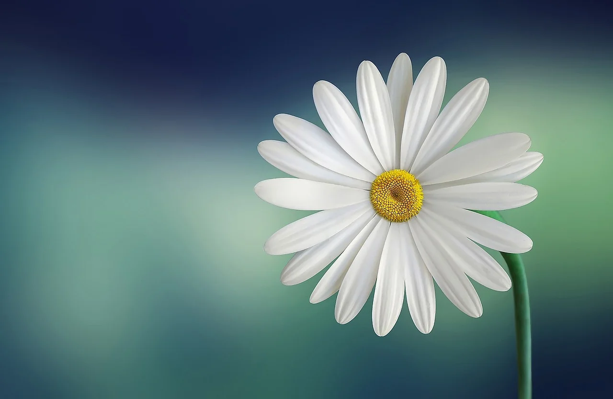
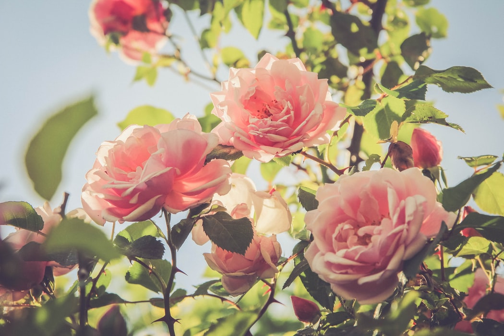

SPRING

Spring, also known as springtime, is one of the four temperate
seasons, succeeding winter and preceding summer. There are various
technical definitions of spring, but local usage of the term varies
according to local climate, cultures and customs. When it is spring in
the Northern Hemisphere, it is autumn in the Southern Hemisphere and
vice versa. At the spring (or vernal) equinox, days and nights are
approximately twelve hours long, with daytime length increasing and
nighttime length decreasing as the season progresses. Spring and
"springtime" refer to the season, and also to ideas of rebirth,
rejuvenation, renewal, resurrection and regrowth. Subtropical and
tropical areas have climates better described in terms of other
seasons, e.g. dry or wet, monsoonal or cyclonic. Cultures may have
local names for seasons which have little equivalence to the terms
originating in Europe.
Read more
SUMMER

Summer is the hottest of the four temperate seasons, falling after
spring and before autumn. At or around the summer solstice (about 3
days before Midsummer Day), the earliest sunrise and latest sunset
occurs, the days are longest and the nights are shortest, with day
length decreasing as the season progresses after the solstice. The
date of the beginning of summer varies according to climate,
tradition, and culture. When it is summer in the Northern Hemisphere,
it is winter in the Southern Hemisphere, and vice versa.
Read more
WINTER
Winter is the coldest season of the year in polar and temperate zones;
it does not occur in most of the tropical zone. It occurs after autumn
and before spring in each year. Winter is caused by the axis of the
Earth in that hemisphere being oriented away from the Sun. Different
cultures define different dates as the start of winter, and some use a
definition based on weather. When it is winter in the Northern
Hemisphere, it is summer in the Southern Hemisphere, and vice versa.
In many regions, winter is associated with snow and freezing
temperatures. The moment of winter solstice is when the Sun's
elevation with respect to the North or South Pole is at its most
negative value (that is, the Sun is at its farthest below the horizon
as measured from the pole). The day on which this occurs has the
shortest day and the longest night, with day length increasing and
night length decreasing as the season progresses after the solstice.
The earliest sunset and latest sunrise dates outside the polar regions
differ from the date of the winter solstice, however, and these depend
on latitude, due to the variation in the solar day throughout the year
caused by the Earth's elliptical orbit
Read more